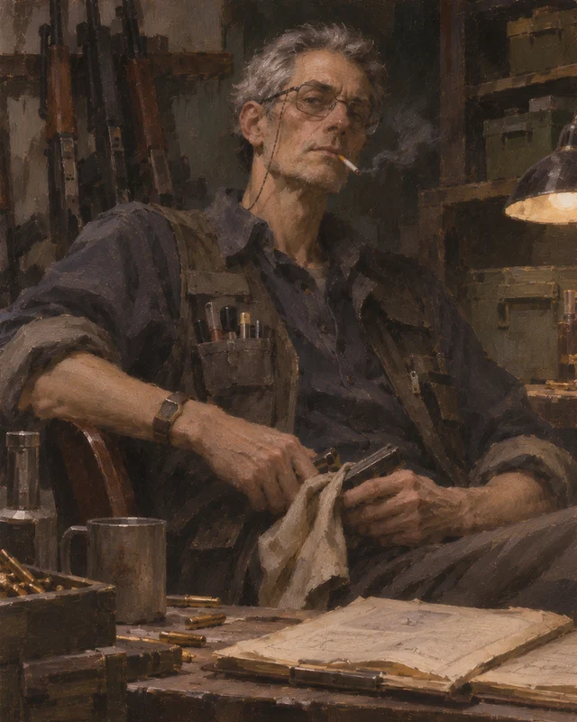
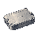
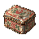
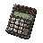
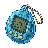
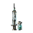
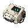
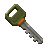
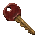

遗失货单 mara_01
在临海路仓库回收一份护具验货单并撤离交付。
- 地点
- 仓库（拟新增任务交互点）
- 前置
- 无
- 依赖能力
quest_interaction- 奖励
- 信誉 +10 · ¥20,000
人物信息：她先确认玩家能否按清单办事。

| 商人 | 职业 | 主题句 | 阵营倾向 | 最看重 | 主营 | 台词 运行/设定/委托 |
|---|---|---|---|---|---|---|
| 维克托·萨伦 VIKTOR SAREN |
贸易商 | 未定 | 未定 | 未定 | 钥匙、生活用品、电子产品、工业器材、文物藏品、医疗收集品 | 10 / 0 / 0 |
| 玛拉·维恩 MARA VANE |
护甲商人 | 秩序高于公平。 | 守序中立，偏守序邪恶（作者定位，不向玩家显示） | 履约、秩序与可靠交付 | 防具、背包 | 18 / 8 / 6 |
| 埃德加·洛克 EDGAR LOCKE |
军火商 | 结果比代价更重要。 | 混沌中立，偏中立邪恶（作者定位） | 结果、可靠数据和保密 | 枪械、弹药、近战、枪械配件 | 8 / 8 / 6 |
| 林岑 LIN CEN |
医生 | 只要还有可能，就不该放弃。 | 守序善良，后期可向混沌善良偏移（作者定位） | 坦诚、可靠病例与救助 | 恢复、止痛、损伤处理、针剂、异常处理 | 9 / 8 / 6 |
台词列：游戏内语音条数 / 设定稿已完成节点数（共 8）/ 委托数量。三人的设计稿来自 design-v1.json，贸易商只有运行时配置。
| 场景 | 维克托·萨伦 | 玛拉·维恩 | 埃德加·洛克 | 林岑 | 状态 |
|---|---|---|---|---|---|
| 进入商店 每次打开商人界面随机一条，避开上一次说过的那句 | 3 | 3 | 3 | 3 | |
| 站桩闲置 界面停留 45 秒无操作，之后每 90 秒一条 | 2 | 2 | 2 | 2 | |
| 成交之后 扣款成功的瞬间播报 | 2 | 2 | 2 | 2 | |
| 改枪结算 改枪结算页的供应商引言；不进随机语音 | — | — | 1 | — | |
| 治疗开单前 诊台结账页上的引言（静态展示） | — | — | — | 1 | |
| 治疗付款后 治疗扣款成功后追加到血量卡片下方 | — | — | — | 1 | |
| 出售结算 卖出成功后的通用口径；整批同一档位时让位给下面的收购反应 | — | 2 | — | — | |
| 收购 · 偏好 整批都是主营／高需求品，按偏好价收下 | — | 1 | — | — | |
| 收购 · 常规 整批都是正常行情品 | — | 1 | — | — | |
| 收购 · 低价 整批都是非主营、需求低的品 | — | 1 | — | — | |
| 信任 II 信誉到 25 且完成首个关键任务时，信任系统尚未实现 | — | 1 | — | — | 未接线 |
| 信任 III 信誉到 60，信任系统尚未实现 | — | 1 | — | — | 未接线 |
| 信任 IV 信誉到 85，信任系统尚未实现 | — | 1 | — | — | 未接线 |
| 交易失败 · 现金不足 余额不足时本该说的那句；目前只弹一句通用提示 | — | 1 | — | — | 未接线 |
| 交易失败 · 库存不足 商品售罄时；当前货架没有库存概念 | — | 1 | — | — | 未接线 |
| 交易失败 · 仓库空间不足 仓库满格时；目前只弹「仓库空间不足」提示 | — | 1 | — | — | 未接线 |
| 收购 · 交出货 贸易商对高价回收的反应 | 1 | — | — | — | 未接线 |
| 收购 · 行情上涨 贸易商对涨价物品的反应 | 1 | — | — | — | 未接线 |
| 收购 · 行情下跌 贸易商对跌价物品的反应 | 1 | — | — | — | 未接线 |
数字是该场景的台词条数，“—”表示这个场景没有写。运行时的规则：同一场景不会连续说同一条。
| 节点 | 维克托·萨伦 | 玛拉·维恩 | 埃德加·洛克 | 林岑 |
|---|---|---|---|---|
| 初识 | — | ✓ | ✓ | ✓ |
| 普通购买 | — | ✓ | ✓ | ✓ |
| 低信任 | — | ✓ | ✓ | ✓ |
| 中信任 | — | ✓ | ✓ | ✓ |
| 高信任 | — | ✓ | ✓ | ✓ |
| 接取委托 | — | ✓ | ✓ | ✓ |
| 完成委托 | — | ✓ | ✓ | ✓ |
| 关键剧情 | — | ✓ | ✓ | ✓ |
三人的过去指向同一次夜间转运，但证据只建立弱关联：没有人完全说谎，也没有人说全。共享剧情不要求三人同时满级，也不当毕业门槛。
| 阶段 | 证据或节点 | 玩家可知 | 保留的疑问 |
|---|---|---|---|
| 初识 | 三条职业委托 | 各自能供货且讲究交付 | 为何如此重视部分旧记录 |
| 熟客 | 仓单／样枪日志／隔离记录 | 记录存在修改或信息缺口 | 谁作出修改、动机是什么 |
| 合作者 | 运输名单、试射说明、维持读数 | 三人各自承担过职责，也有省略 | 省略是否足以改变对其行为的评价 |
| 关键分支 | 完整原件与独立核对路径 | 玩家可选择合作或提出异议 | 真相的不同部分如何相互印证 |
| 核心关系 | 三份高信任补充材料 | 各人的隐瞒与价值判断更明确 | 不强行给出唯一统一叙述 |
assets/ui/safehouse/merchant_viktor.webp）、固定货架（26 件，125% 溢价）和 10 条运行时语音。
收购反应台词 reserved.sell / priceUp / priceDown 已写，但行情涨跌这套机制还没做，代码里没有调用点。design-v1.json 里有，
游戏内商店只跑 MERCHANT_DIALOGUE 的随机池，两套词还没合并。需要定：哪套作为正式口径，另一套是否保留为设计注释。tasks 在藏身处标记为 planned，六项委托的地点多为「拟新增／待设计」，不能当作现有地图已有设施。procurement 只在改枪结算页当引言用，MerchantSpeech.say() 明确跳过这个键，所以不会在随机语音里出现。beforeTreatment 是诊台结账页上的静态引言，不经过语音池。sell 与三档 buyback* 已接线：卖出成功当场播报，整批落在同一档位时用收购反应、混着卖才用通用结算口径。reserved.trust2/3/4 与 reserved.noFunds/noStock/noSpace 共 6 条已写未接线：信任系统、库存与结算失败提示都还没做。reserved.sell / priceUp / priceDown 三条收购反应没有被任何代码调用。主题句未定
柜台口头禅：「哈哈！没有卖不出去的东西，只有没找对的买家！来来来，看看今天有什么好货！」
贸易商 · 零售、仓储与物资流通 · 大型连锁超商集团经营者，拥有广泛的采购与供货渠道。比起坐在办公室里处理文件，他更喜欢亲自与顾客打交道。
公开身份未定。
维克托：收集品与钥匙统一由他供货——两档通用模板钥匙加四间房的房卡，购买后进入仓库。
收购全部九类收集品与钥匙（钥匙按剩余耐久 × 75% 回收）；偏好生活用品及历史影像
可收类别：收集品（九类）、key
信任、供货条件与更多贸易渠道预留；当前为固定货架。
背景未定。这位商人的来历、灾前身份、与第一次潮汐的关系都还没有写。
人物弧光未设计。
性格条目未定。
未定
未定
未定
未定
未定
信任等级未设计：当前没有信誉、交易额和任务门槛，货架固定开放。
固定货架：26 件白至紫收集品，售价为参考价值的 125%，买下直接进仓库。没有等级、限购或信任门槛。

铝饭盒¥1,400
铁皮饼干盒¥5,400未拆封的毛巾¥4,000双铃闹钟¥12,000纪念瓷器套装¥45,000收音机¥7,500
计算器¥5,000
电子宠物机¥18,000随身听¥30,000铜管¥3,000轴承¥5,600绝缘胶带¥4,200精密游标卡尺¥16,000黄铜怀表¥17,000黑胶唱片¥16,000
注射器¥5,800
便携式心电图机¥32,000 001号测试钥匙¥400,000诊所储藏室钥匙¥7,400,000
001号测试钥匙¥400,000诊所储藏室钥匙¥7,400,000 普通钥匙¥17,500,000钟表店私人收藏室钥匙¥19,000,000
普通钥匙¥17,500,000钟表店私人收藏室钥匙¥19,000,000
仓库后勤储备室钥匙¥20,500,000 高级钥匙¥22,000,000
高级钥匙¥22,000,000
老公寓3号房钥匙¥18,500,000银行金库大门钥匙¥35,500,000没有委托线。贸易商只做零售与收购，尚未设计任务、信任或剧情节点。
“哟！瞧瞧谁来了！快进来，今天可有不少好东西！”
“欢迎欢迎！想买什么尽管说，没有的我也能替你打听打听！”
“哎呀，来得正好！我刚刚还在想，今天会不会有贵客登门呢！”
“慢慢挑，不着急！我年轻时也这样，买个东西能琢磨半天！”
“嘿嘿，看中哪件了？别光盯着呀！价格嘛，总有得商量的余地！”
“好！成交！哈哈，跟爽快人做生意就是舒坦！”
“多谢惠顾！下次来可别忘了找我，保准还有新鲜玩意儿！”
“嚯！好东西啊！你从哪儿翻出来的？算了算了，生意人的规矩，不该问的不问！”
“哎哟，这东西现在可抢手！你要是早些时候囤了几件，那我可得夸你有眼光！”
“生意嘛，有涨就有跌！别急，货在手里，总有机会的！”
这位商人还没有设定稿台词。当前只在 MERCHANT_DIALOGUE 里有 10 条运行时语音，八节点（初识／购买／低中高信任／接取／完成／关键剧情）全部空缺。
秩序高于公平。
柜台口头禅：「规矩说清楚，货物交明白。」
防护装备与物资供应 · 防护装备、头盔与背包。
原环礁湾港务体系防护物资采购负责人，现经营防护装备生意。
总览页简介：原环礁湾港区防护物资采购负责人，如今经营护甲、头盔与背包生意。她以守约和精明著称，掌握着不少稀缺防护装备的供货渠道。至于灾变期间那些被她亲手签署的物资调拨记录，她似乎并不愿多谈。
玛拉：目前可购买 I—III 级防护与前三档背包。
防具与背包；偏好工业器材、港务资料和防护检测器材
可收类别：防具、背包、收集品（九类）
高级防护与稀缺背包的货源、调配与预留。
玛拉·维恩曾负责环礁湾港区的防护装备采购与物资调配。在第一次潮汐爆发期间，她参与了紧急撤离所需的物资与运输资源分配。
面对日益紧缺的资源，她始终坚持严格的调度规则，并作出过一些至今仍存在争议的决定。
灾变后，玛拉凭借保留下来的商业关系与采购渠道重新开展防护装备生意。
她非常重视合同、信用与办事效率。只要双方履行约定，她便是一位可靠的合作伙伴；但如果有人希望凭交情得到特殊照顾，通常只会换来她礼貌而坚定的拒绝。
她保存着不少旧时代的账册，其中某些记录可能比她出售的任何一件护甲都更有价值。
保存的撤离记录能证明她并非随意调配，也能显示她曾优先保护有权势或有交易价值的人。
已经答应的交付必须落实，商品状态必须说清。
她可能把合同和名额置于个体处境之上。
履约、秩序与可靠交付
愿意动用供货关系、为玩家承担调货和周转成本，把稀缺名额留给玩家。
48岁，宽肩、结实，短而微卷的深色头发，面部线条清晰，眼神冷静审视。赭黄工作衫、耐磨帆布马甲，旧软尺、钥匙和标签夹。一手扶护甲样品，另一手压住账册。暖棕、橄榄绿，衣着整洁而有磨损。
立绘：assets/ui/safehouse/merchant_armor.webp · 要求见 BRIEF_V1.md 第七、八节
人物核心：她值得合作，却不一定值得原谅。
| 等级 | 信誉 | 累计交易额 | 关键任务 | 价格系数 |
|---|---|---|---|---|
| Lv.1 初识 | 0 | ¥0 | 无 | 1.00 |
| Lv.2 熟客 | 25 | ¥300,000 | 完好的扣具 | 1.00 |
| Lv.3 合作者 | 60 | ¥1,200,000 | 封存仓单 | 0.98 |
| Lv.4 核心关系 | 85 | ¥3,000,000 | 最后一班运输车 | 0.96 |
晋级三项同时满足：信誉 + 累计有效交易额 + 关键任务标记。数值为设计建议，未实装。
| 等级 | 货架内容 |
|---|---|
| Lv.1 | 头盔 I护甲 I头盔 II护甲 II旧帆布挎包 |
| Lv.2 | 头盔 III护甲 III民用旅行背包加固登山背包 |
| Lv.3 | 头盔 IV护甲 IV头盔 V护甲 V战术突击背包 |
| Lv.4 | 头盔 VI护甲 VI远征模块背包 |
仅未来分级映射，当前货架不变。标「占位」的条目没有物品 ID，需等对应系统实装。
mara_01在临海路仓库回收一份护具验货单并撤离交付。
quest_interaction人物信息：她先确认玩家能否按清单办事。
mara_02回收指定封装的背带扣具，保持封装可辨并交付。
quest_items人物信息：用可核对的包装状态表达保护物资，不新增耐久系统。
mara_03比对旧仓单与银行保存的调拨副本，交回不一致之处。
document_comparison人物信息：玩家发现名单修改可能影响当年的撤离顺序。
mara_04取回一箱指定防护样品和外部编号记录，不要求打开箱体。
quest_items人物信息：她对封条与交接链的重视逐渐超过对物资本身的重视。
mara_05调查曾被取消通行资格的运输安排，取得名额修改记录。
branch_dialogue人物信息：她的职责、收益和对个体的冷酷同时进入视野。
合作路径将完整原件交给她内部存档，接受她对保密的要求。
防护装备额外1%采购折扣；获取内部调度用语。
替代路径拒绝封存争议记录，保留经核对副本；另做一次独立验货，证明仍能可靠合作。
一份不同视角的核对材料与一次防护样品奖励；同样获得最高常规货架权限。
两路核心信誉与解锁完全相同，都不会永久锁货。
mara_06阅读她保留的原始调度页，区分制度要求与她个人作出的选择。
story_documents人物信息：不替她开脱，也不以单个真相推翻全部记录。
“来了？货都在架上，价格也标清楚了。慢慢看。”
“又要进封锁区？先检查好装备，省得回来找我算账。”
“今天到了一批新货。质量我验过了，值不值这个价，你自己判断。”
“拿不定主意？买贵了顶多心疼钱，买错了可就不一定了。”
“护甲不是越重越好。你要是连路都跑不动，穿再厚也没用。”
“钱货两清。出了这扇门，记得自己对装备负责。”
“眼光不错。这批货我亲自验过，希望你别太快把它穿坏了。”
“东西我收下了。价格公道，咱们都不用浪费口舌。”
“嗯，品相还过得去。账我记好了，钱你点清楚。”
“这可是正经的好货。我正缺这一类，价格自然不会亏待你。”
“嗯，东西还不错。按正常行情收，咱们都省事。”
“这东西在我手里可不好出货。你要卖，我只能给这个价。”
“你这人还算守时。下次有合适的货，我可以替你留意。”
“能把事情办妥的人不多。往后有些订单，我会优先考虑你。”
“这些年，我很少把自己的账本交给别人看。你是个例外。”
“预算不够就别勉强。我不做赊账生意。”
“卖完了。下批什么时候到，我现在也没法保证。”
“先把你的仓库收拾好。东西买回去，总得有地方放。”
“柜台上的都是公开货。价钱写着，规矩也写着。”
“数量对过了，交付也记上。”
“先把这一笔做完，再谈下一批。”
“你交回来的东西和清单相符。以后可以提前问货。”
“这批有你的份。留货的条件，我们按上次说的办。”
“清单上每一项都写了。交不齐，就先告诉我。”
“东西收到了。你守约，我也会记着。”
“当时谁都想上车。可车位不是祈祷出来的。”
委托的「人物信息」是叙述、不是台词，写在上面的任务卡里；任务完成/失败台词尚未撰写。
结果比代价更重要。
柜台口头禅：「枪不会背叛你。至于卖枪的人……那得看你出多少钱。」
军械供应与技术维护 · 枪械、弹药与近战装备。
退役军械技术员，兼营灰色渠道武器供应和维护。
埃德加：全新枪械与一级、二级弹药可交易。
枪械、弹药与配件；偏好电子产品、军事物资及通信资料
可收类别：枪械、近战、弹药、枪械配件、收集品（九类）
高阶弹药、专业军械与配件渠道。
埃德加曾向安保承包商、地下武装和特殊护送队提供军械与维护支持。潮汐之后，他开始收集异常环境中的故障、穿透和射击反馈。他提供可靠的武器，也会提出危险的测试委托。比起亲自验证，他更愿意付钱给能把记录带回来的探索者。
他知道部分试验委托的风险高于委托说明所透露的程度，保留着更完整的失败记录。
不把自己知道有品质问题的武器当好货出售。
会把测试对象和执行者的生命过度工具化。
结果、可靠数据和保密
愿意提供高级货源与完整一些的测试记录，让玩家参与重要的采购和反馈。
55岁，干瘦略高，灰白寸发、矩形眼镜、敏锐而带疲态的目光。钢蓝工装、灰黑马甲或旧工业夹克，工具摆放整齐。手持卸下的弹匣与小型工具，台上有维护布、零件和出入库簿。精明克制，偶有干涩的幽默。
立绘：assets/ui/safehouse/merchant_guns.webp · 要求见 BRIEF_V1.md 第七、八节
| 等级 | 信誉 | 累计交易额 | 关键任务 | 价格系数 |
|---|---|---|---|---|
| Lv.1 初识 | 0 | ¥0 | 无 | 1.00 |
| Lv.2 熟客 | 25 | ¥400,000 | 回收弹壳 | 1.00 |
| Lv.3 合作者 | 60 | ¥1,500,000 | 第十七次试射 | 0.98 |
| Lv.4 核心关系 | 85 | ¥4,000,000 | 试射条款 | 0.96 |
晋级三项同时满足：信誉 + 累计有效交易额 + 关键任务标记。数值为设计建议，未实装。
| 等级 | 货架内容 |
|---|---|
| Lv.1 | 5.56mm普通弹5.56mm改良弹7.62mm普通弹7.62mm改良弹9mm普通弹9mm强化弹.45 ACP普通弹.45 ACP改良弹普通鹿弹强化鹿弹旧式折叠刀 |
| Lv.2 | M4A1AKMFAMAS F1PP-19-01 VityazMP5A3UMP45MP-155Remington 870Saiga-12Glock 17M1911A1Beretta 92FS5.56mm钢芯弹7.62mm钢芯弹9mm钢芯弹.45 ACP钢芯弹硬质鹿弹M-9 制式战斗刀 |
| Lv.3 | 5.56mm硬芯穿甲弹7.62mm穿甲弹9mm穿甲弹.45 ACP穿甲弹穿甲霰弹重型丛林砍刀占位 |
| Lv.4 | 5.56mm特种穿甲弹7.62mm特种穿甲弹9mm特种穿甲弹.45 ACP特种穿甲弹特种穿甲霰弹 |
仅未来分级映射，当前货架不变。标「占位」的条目没有物品 ID，需等对应系统实装。
edgar_01找回指定枪箱的封存样件及交接凭据。
quest_items人物信息：玩家接触他对来源和品质的要求。
edgar_02接受委托后在指定区域完成一次射击采样，带回记录。
combat_telemetry人物信息：不能用购买的普通弹药冒充采样证据。
edgar_03回收一场失败试射留下的样枪与故障日志。
quest_items人物信息：他此前提供的风险说明与实测结果不完全一致。
edgar_04在明确告知风险的条件下取得对照数据，或回收另一组已记录的数据。
combat_telemetry人物信息：主动试验与资料回收都能交付有效数据。
edgar_05查清委托说明中被省略的风险，并决定如何完成最后的验证。
branch_dialogue人物信息：拒绝隐瞒风险的试验，仍能通过透明测试或独立资料核验晋级。
合作路径接受他的保密测试条件，亲自执行已告知危险的采样；不安排无辜者充当目标。
高级弹药额外1%采购折扣；取得他的私人技术批注。
替代路径拒绝他原先隐去风险的安排，改用充分告知的对照试验或独立故障日志完成核验。
取得执行者一侧的完整日志与一份普通弹药奖励；同样获得最高常规货架权限。
两路核心信誉与解锁完全相同，都不会永久锁货。
edgar_06查看完整的招募与试验记录，追问他如何计算执行者的代价。
story_documents人物信息：保留他对品质的责任感，也明确他对人的冷漠。
“来了？说吧，今天准备往什么东西上开洞？”
“枪、弹药、零件。要是想买安全感，出门左转。”
“让我猜猜……上次那把枪还活着，你也是。不错的成绩。”
“看够了吗？放心，它们不会自己走火。至少我卖的不会。”
“你站在那儿想了半天，是在挑枪，还是在挑自己的死法？”
“好选择。记得保养，我可不负责替你擦枪。”
“钱货两清。至于它最后打中谁，那是你们之间的事。”
“改得挺有想法。至于能不能打中东西……我建议你先去靶场，别去墓地。”
“口径、用途、预算。按这个顺序说。”
“交付前查过了。回来时告诉我它表现怎么样。”
“先给我一个能核对的结果。”
“这份记录有用。比一句“打得不错”有用得多。”
“这次把完整的测试说明也给你。看完再决定。”
“条件写在纸上。哪一条不能接受，现在说。”
“样品和记录都在，省了我不少猜测。”
“我没骗他们安全。我只是没替他们问第二遍。”
委托的「人物信息」是叙述、不是台词，写在上面的任务卡里；任务完成/失败台词尚未撰写。
只要还有可能，就不该放弃。
柜台口头禅：「我见过太多人死于本可以治好的伤。至于那些治不好的……我还在想办法。」
医疗用品与收费治疗 · 医疗用品与付费治疗。
原环礁湾市立医院急诊医生，现经营临时诊台与医疗供应点。
林岑：药品与治疗服务分开收费；部分药效尚未开放。
医疗道具；偏好医疗收集品及异常观察资料
可收类别：医疗品、收集品（九类）
高阶医疗供应、损伤处理与特殊医疗支持。
林岑参与过首次潮汐中的急救、医疗分流与一项保密的异常患者观察计划。她见过仍有反应的患者被长期维持，也见过救治逐渐变成观察。撤离时，她带走部分病例资料。如今她在相对安全的落脚点行医，继续寻找那些记录的后续；她的善意真实存在，也让她越来越难接受救治必须停止的可能。
她保留着异常患者观察资料，也隐瞒了自己持续追查和投入资源的程度。
患者不是仅供获得结论的材料；但她也必须面对自己是否仍尊重患者意愿。
为了不放弃一个人，可能要求别人承担不合理的风险。
坦诚、可靠病例与救助
愿意提供贵重医疗物资、分享病例与研究疑问，让玩家参与她不愿独自作出的判断。
41岁，黑发盘起，面容克制温和，眼下有疲态，目光平静专注。实用的旧象牙白医疗外套，内搭灰绿衬衣，手持纸质病历夹，口袋有笔和手电。桌面仅有少量绷带、药瓶与记录本。成熟、可靠，带压抑的忧虑。
立绘：assets/ui/safehouse/merchant_doctor.webp · 要求见 BRIEF_V1.md 第七、八节
| 等级 | 信誉 | 累计交易额 | 关键任务 | 价格系数 |
|---|---|---|---|---|
| Lv.1 初识 | 0 | ¥0 | 无 | 1.00 |
| Lv.2 熟客 | 25 | ¥100,000 | 接触记录 | 1.00 |
| Lv.3 合作者 | 60 | ¥450,000 | 隔离区样本 | 0.98 |
| Lv.4 核心关系 | 85 | ¥1,200,000 | 不被允许结束的救治 | 0.96 |
晋级三项同时满足：信誉 + 累计有效交易额 + 关键任务标记。数值为设计建议，未实装。
| 等级 | 货架内容 |
|---|---|
| Lv.1 | 绷带安禾无菌敷料安禾止痛片止血带 |
| Lv.2 | 家庭急救包复方镇痛胶囊医用夹板H-7 应急医疗针 |
| Lv.3 | 制式野战医疗包强效镇痛剂创伤处理包外科手术包镇静香膏认知稳定剂 |
| Lv.4 | HV-300 精密医疗箱M-4 代谢激活剂R-9 再生试验剂祛咒圣露 |
仅未来分级映射，当前货架不变。标「占位」的条目没有物品 ID，需等对应系统实装。
lin_01从诊所转存点取回一份旧医院病历夹。
quest_items人物信息：不把现有诊所直接改名为市立医院。
lin_02回收并整理一组撤离时期的接触登记和随访条目。
document_comparison人物信息：如实标注缺失信息，不要求玩家已有异常状态。
lin_03获取一份有明确来源的封装样本或等价病例记录。
quest_items人物信息：样本不能从普通医疗收藏或商店购买替代。
lin_04调查持续运转的生命支持系统，带回读数与设备记录。
medical_site_interaction人物信息：设备在运转不等于患者仍可恢复，调查只提供证据。
lin_05核对患者意愿、原始病例和维持记录，决定是否支持继续投入。
branch_dialogue人物信息：支持有限救治或拒绝无限维持，都能完成关键任务。
合作路径在充分告知、有退出条件的前提下，支持一轮有明确上限的救治尝试。
一次限量常规医疗补给；看到她后续观察记录。
替代路径拒绝持续扩大风险，提交患者意愿与独立病例核验，要求她接受资源和救治边界。
一份完整病例副本与等值常规医疗补给；同样获得最高常规货架权限。
两路核心信誉与解锁完全相同，都不会永久锁货。
lin_06与她一起确认记录中被省略的判断，讨论救治与研究的边界。
story_documents人物信息：不规定患者最终生死，也不把一次选择写成通用医学结论。
“来了？先让我看看你的脸色……嗯，至少比上次好些。”
“药品都在柜台上。有什么不舒服的，最好现在告诉我。”
“希望你今天只是来买东西的。诊台刚收拾干净。”
“还没想好？药可以慢慢挑，伤口可不会等你。”
“如果累了，就坐一会儿。这里至少没有东西追着你跑。”
“用法写在包装上。别擅自加量，我不想再给你洗胃。”
“东西收好。希望你用不上，但真需要的时候，别舍不得。”
“坐下，别乱动。伤得怎么样，我检查完自然会告诉你。”
“好了，能处理的都处理干净了。下次别等到快没命了才来找我。”
“哪里受伤、接触过什么，慢慢说，不用急。”
“药盒上的说明留着。有不清楚的先问。”
“缺的那一段接触史，我暂时记作未知。”
“这次的记录完整，我可以据此安排下一步。”
“有一份病历，我希望你看过再回答我。”
“先保证你能回来。记录不全可以补，人回不来就没有下一次。”
“这些情况很重要。我会把来源一并记下。”
“我不是想证明自己是对的。我只是……不想再那么轻易放弃任何一个人。”
委托的「人物信息」是叙述、不是台词，写在上面的任务卡里；任务完成/失败台词尚未撰写。
assets/ui/safehouse/merchant_viktor.webp）、固定货架（26 件，125% 溢价）和 10 条运行时语音。
收购反应台词 reserved.sell / priceUp / priceDown 已写，但行情涨跌这套机制还没做，代码里没有调用点。reserved.* 三条已写，但没有调用点；接上后成交出售时会有人味，代价是文案要覆盖更多物品类别。